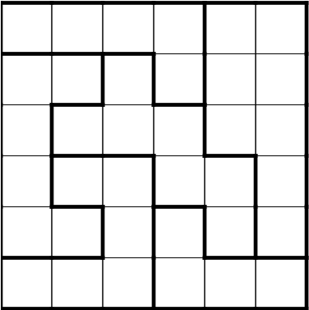

While this set of problems does not require any
coding experience or knowledge of programming
constructs, you will be required to solve a number
of (possibly challenging) puzzles.
There are 12 black and 12 white socks in a drawer. You are blindfolded and need to pick a pair that has the same color. What is the least number of socks that would guarentee a matching pair?
You have 3 boxes: one containing cupcakes, one containing cookies and one containing both cupcakes and cookies. They are labelled "Cupcakes", "Cookies" and "Cupcakes & Cookies". But each box is incorrectly labeled. You are asked to correct the labels for each box. You can pick any ONE box and exactly one item from the box shall be revealed. How do you fix all the labels?
You have 8 almost identical cupcakes (indistinguishable without a super-sensitive beam balance). 7 of the cupcakes are identical, one is slightly lighter. You have a super-sensitive beam balance but you may only use it twice. How do you identify the light cupcake?
Place one star on each large box such that each row and column has exactly one star.
